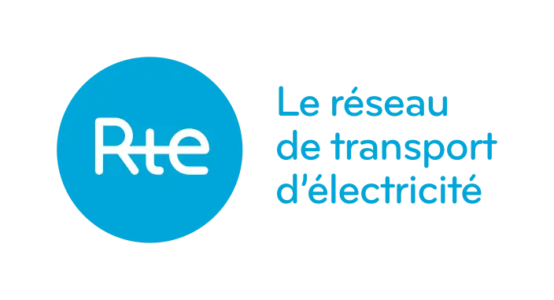

Career
Internship

RTE – 7-week internship
Description : RTE is a French company that transmits high and very high voltage electricity throughout the country.
Mission : I was welcomed into the RTE maintenance team for seven weeks. I studied the short-circuit current of the equipment used to connect power lines. To do this, I used AutoCAD and a SAP product. I worked on electrical plans, analyzed different equipment configurations, and documented all “abnormal” cases that did not match any known configuration. I then proposed solutions and approximations for each of these plans. This work helped update RTE’s database. It also gave me the opportunity to visit electrical substations, speak with professionals, and gain insight into the corporate world and the exciting energy sector.
Skills developed : Autonomy, rigour, communication.